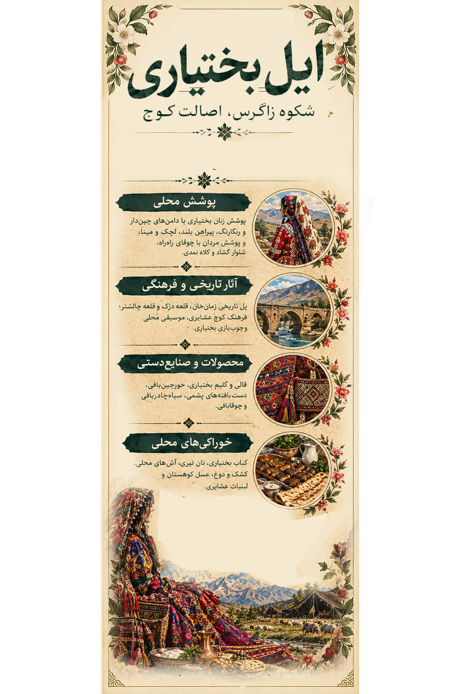

۱. تصویر چهارمحالوبختیاری؛ روایت یک سرزمین
1. Chaharmahal and Bakhtiari in Art: A Land's Story
در این اثر، پوشش رنگارنگ زنان، چشمانداز کوههای زاگرس، زندگی عشایری، معماری تاریخی، دستبافتهها و خوراکهای محلی در کنار هم قرار گرفتهاند. هر عنصر، بخشی از رابطه مردم با طبیعت و حافظه فرهنگی این سرزمین را بازگو میکند.
This artwork brings together colorful women's clothing, the Zagros Mountains, nomadic life, historic architecture, woven crafts, and local food. Each element reflects the relationship between people, nature, and cultural memory.

اثر تصویری چهارمحالوبختیاری از مجموعه «ایران، هزار رنگ»
The Chaharmahal and Bakhtiari artwork from “Iran, A Thousand Colors”
در رنگ دامنها، نقش دستبافتهها و راههای کوچ، داستان مردمانی جاری است که زندگیشان با کوهستان و دشت پیوند خورده است.
In colorful skirts, woven patterns, and migration routes lives the story of people whose lives are connected to mountains and plains.
این تصویر، اثر هنری مجموعه است؛ متنهای این صفحه برای معرفی فرهنگی و تاریخی استان ارائه شدهاند.
This image is the artwork created for the collection. The text on this page provides cultural and historical context about the province.
۲. پوشش زنان روستایی و عشایری؛ زیبایی در جزئیات
2. Rural and Nomadic Women's Dress: Beauty in the Details
پوشاک زنان چهارمحالوبختیاری یک شکل ثابت و یکسان ندارد. پوشش زنان بختیاری، زنان روستایی چهارمحالی و گروههای محلی دیگر میتواند از نظر فرم لباس، پارچه، رنگ و شیوه آراستن تفاوت داشته باشد. شرایط اقلیمی، شیوه زندگی، سنتهای خانوادگی و دسترسی به پارچه نیز در انتخاب لباس تأثیر گذاشتهاند.
Women's clothing in Chaharmahal and Bakhtiari is not uniform. Dress among Bakhtiari women, rural women of Chaharmahal, and other local communities may differ in garment shape, fabric, color, and adornment. Climate, lifestyle, family traditions, and access to textiles have all influenced clothing choices.

لیبل اختصاصی چهارمحالوبختیاری؛ راهنمای تصویری پوشش و فرهنگ محلی
Chaharmahal and Bakhtiari exhibition label: a visual guide to local dress and culture
جومه یا پیراهن محلیJomeh: Traditional Dress
در پوشش سنتی زنان بختیاری، پیراهن بلند و رنگارنگ یکی از اجزای شناختهشده است. رنگ و طرح پارچه، نوع دوخت و جزئیات تزئینی میتواند با توجه به دوره، محل زندگی و رسم خانوادگی تفاوت داشته باشد.
A long, colorful dress is a recognizable part of traditional Bakhtiari women's clothing. Fabric colors, patterns, stitching, and decorative details can vary by period, place, and family custom.
شولار قِری؛ دامن پرچینSholar Qeri: The Full Skirt
دامنهای پرچین و بلند از ویژگیهای شناختهشده لباس زنان بختیاریاند. حرکت پارچه و لایههای رنگی آن هنگام راه رفتن، جلوهای ویژه به پوشش میدهد؛ البته شکل و میزان چین در نمونههای مختلف یکسان نیست.
Long, full skirts are a well-known feature of Bakhtiari women's dress. The movement and layers of color create a distinctive effect, although the cut and amount of pleating vary between garments.
لچک و مینا؛ پوشش سرLachak and Meyna: Head Coverings
لچک و مینا در پوشش سنتی زنان بختیاری شناخته شدهاند. لچک روی سر قرار میگیرد و مینا، روسری بلند و سبکی است که روی سر و شانهها میافتد. جنس، رنگ و شیوه بستن آنها میتواند متفاوت باشد.
Lachak and meyna are recognized elements of traditional Bakhtiari women's dress. The lachak is a headpiece, while the meyna is a long, light scarf that falls over the head and shoulders. Materials, colors, and tying styles may vary.
پوشش زنان روستایی چهارمحالRural Women's Dress in Chaharmahal
پوشش روستایی را نباید در همه آبادیها یکسان فرض کرد. نوع روسری، پیراهن، دامن، پارچه و شیوه پوشیدن لباس در هر منطقه میتواند متفاوت باشد. برای ثبت نامهای محلی و جزئیات دقیق، عکسهای مستند و روایت زنان همان روستا اهمیت دارند.
Rural dress should not be treated as identical across all villages. Scarves, dresses, skirts, fabrics, and wearing styles may differ by location. Documentary photographs and accounts from local women are important for recording specific names and details.
برای نسبت دادن یک نوع لباس یا نام محلی به روستایی مشخص، بهتر است از منبع مردمشناختی یا تأیید افراد آگاه محلی استفاده شود.
Ethnographic sources or confirmation from knowledgeable local residents are important when linking a garment or local name to a specific village.
۳. روستاهای چهارمحالوبختیاری؛ زندگی در دل زاگرس
3. Villages of Chaharmahal and Bakhtiari: Life in the Zagros
روستاهای این استان از آبادیهای کوهستانی و عشایری تا روستاهای باغدار در حاشیه زایندهرود گستردهاند. معماری بومی، مراتع، چشمهها و شیوه زندگی مردم، هر روستا را به بخشی از روایت فرهنگی منطقه تبدیل میکند.
The province's villages range from mountain and nomadic settlements to orchard villages near the Zayandeh Rud. Local architecture, pastures, springs, and everyday life make each village part of the region's cultural story.
سرآقاسید؛ روستای پلکانیSar Agha Seyyed: A Terraced Village
روستای سرآقاسید در منطقه کوهرنگ با بافت متراکم و خانههای پلکانی در دامنه کوه شناخته میشود. شکل قرارگیری خانهها در کنار هم، نمونهای دیدنی از سازگاری معماری بومی با شیب زمین و اقلیم کوهستانی است.
Sar Agha Seyyed, in the Kuhrang area, is known for its compact settlement and terraced houses on a mountain slope. Its architecture shows how local building traditions respond to steep terrain and a mountain climate.
یاسهچاه؛ دالانهای تاریخیYaseh Chah: Historic Passageways
یاسهچاه در محدوده سامان، به بافت قدیمی و دالانهای سرپوشیدهاش شناخته میشود. نزدیکی به زایندهرود و باغهای منطقه، زمینه مناسبی برای روایت پیوند زندگی روستایی با آب و کشاورزی فراهم میکند.
Yaseh Chah, in the Saman area, is known for its old settlement and covered passageways. Its proximity to the Zayandeh Rud and local orchards offers a story of rural life shaped by water and agriculture.
دهچشمه و پیرامون پیرغارDeh Cheshmeh and the Pir Ghar Area
دهچشمه در شهرستان فارسان و در نزدیکی جاذبه طبیعی و تاریخی پیرغار قرار دارد. چشمهها، فضای کوهستانی و آثار تاریخی پیرامون، این ناحیه را برای معرفی طبیعت و حافظه تاریخی استان مناسب میکنند.
Deh Cheshmeh, in Farsan County, lies near the natural and historic Pir Ghar site. Springs, mountain scenery, and nearby historical traces make the area suitable for exploring the province's natural and historical heritage.
شیخعلیخان و دیمه؛ طبیعت کوهرنگSheikh Ali Khan and Dimeh: Kuhrang's Nature
منطقه کوهرنگ با کوهستان، چشمهها و مراتع شناخته میشود. آبشار شیخعلیخان و چشمه دیمه از جاذبههای طبیعی این محدودهاند و میتوانند در کنار روایت زندگی روستایی و کوچ فصلی معرفی شوند.
The Kuhrang area is known for mountains, springs, and pastures. Sheikh Ali Khan Waterfall and Dimeh Spring are among its natural attractions and can be presented alongside stories of rural life and seasonal migration.
معروف بودن یک روستا لزوماً به معنای داشتن پوشش ویژه و مستند مختص همان روستا نیست؛ معرفی پوشاک محلی نیازمند بررسی جداگانه است.
A village's popularity does not necessarily mean it has a distinct, documented clothing style of its own. Local dress requires separate research.
۴. آثار تاریخی، معماری و طبیعت
4. Historic Sites, Architecture, and Nature
قلعه چالشترChaleshtar Castle
مجموعه تاریخی چالشتر در نزدیکی شهرکرد، با معماری و تزئینات وابسته به خانهها و بناهای تاریخی منطقه شناخته میشود. این مجموعه تصویری از شیوه زندگی، هنر و سلیقه معماری در دورههای گذشته به دست میدهد.
The historic Chaleshtar complex near Shahrekord is known for its architecture and decorative details. It offers a glimpse into past lifestyles, artistic traditions, and architectural tastes.
قلعه دزکDezak Castle
قلعه دزک از بناهای تاریخی شناختهشده استان است. معماری آن و روایتهای تاریخی مرتبط با منطقه، فرصتی برای پیوند دادن تاریخ محلی با هنر و زندگی اجتماعی فراهم میکند.
Dezak Castle is one of the province's recognized historic buildings. Its architecture and local historical narratives connect regional history with art and social life.
پل زمانخان و زایندهرودZaman Khan Bridge and the Zayandeh Rud
پل زمانخان در محدوده سامان بر فراز زایندهرود قرار دارد و از نشانههای شناختهشده منطقه است. پل، رودخانه و باغهای پیرامون، رابطه دیرینه میان راههای ارتباطی، آب و کشاورزی را به نمایش میگذارند.
Zaman Khan Bridge, in the Saman area, crosses the Zayandeh Rud and is a well-known regional landmark. The bridge, river, and nearby orchards illustrate the long-standing relationship between transport routes, water, and agriculture.
کوهستان زاگرس و مراتع عشایریThe Zagros Mountains and Nomadic Pastures
کوهها، دشتها و مراتع استان تنها چشمانداز طبیعی نیستند؛ این محیطها در مسیرهای کوچ، دامداری، تولید فرآوردههای لبنی و شکلگیری سبک زندگی بسیاری از خانوادههای روستایی و عشایری نقش دارند.
The province's mountains, plains, and pastures are more than scenery. They shape migration routes, animal husbandry, dairy production, and the lives of many rural and nomadic families.
۵. خوراک و شیرینی؛ طعمهای محلی زاگرس
5. Local Food and Sweets of the Zagros
فرهنگ غذایی چهارمحالوبختیاری با دامداری، محصولات کوهستانی، باغداری و سنتهای خانوادگی پیوند دارد. نام و شیوه تهیه غذاها در شهرها و روستاهای مختلف میتواند متفاوت باشد.
The food culture of Chaharmahal and Bakhtiari is connected to animal husbandry, mountain products, orchards, and family traditions. Dish names and recipes may vary between towns and villages.
کباب بختیاریBakhtiari Kebab
کباب بختیاری از غذاهای شناختهشدهای است که نام آن با این منطقه پیوند خورده است. در معرفی آن میتوان به شیوه آمادهسازی گوشت و جایگاه کباب در مهمانیها و سفرههای ایرانی اشاره کرد.
Bakhtiari kebab is a well-known dish associated with the region. Its preparation and the place of kebab in Iranian gatherings can be included in the food story.
آشها و خوراکهای محلیLocal Soups and Dishes
آشها و خوراکهای خانگی بخشی از سفرههای محلیاند. مواد اولیه و روش پخت ممکن است بر اساس فصل، محصولات در دسترس و رسم هر خانواده تغییر کند؛ بنابراین نامهای خاص هر روستا بهتر است با روایت محلی ثبت شود.
Soups and home-cooked dishes are part of local food traditions. Ingredients and methods can change with the season, available produce, and family customs, so village-specific names should be recorded through local accounts.
نان کاکولیKakoli Bread
نان کاکولی از نانهای محلی شناختهشده شهرکرد و پیرامون آن است. در برخی نمونهها از شیرینکنندهها، خرما یا خشکبار استفاده میشود؛ دستور تهیه میتواند از نانواییای به نانوایی دیگر تفاوت داشته باشد.
Kakoli is a well-known local bread in Shahrekord and nearby areas. Some versions include sweeteners, dates, or dried fruit, and recipes can vary between bakers.
گز بلداجیBoldaji Gaz
گز بلداجی از شیرینیهای شناختهشده استان است و در معرفی سوغات منطقه جایگاه ویژهای دارد. این شیرینی را میتوان در کنار نانهای محلی و محصولات باغی در روایت تصویری فرهنگ خوراک معرفی کرد.
Boldaji gaz is one of the province's best-known sweets and an important local souvenir. It can be presented alongside local breads and orchard products in the region's food story.
برای ثبت غذاهای خاص هر روستا، بهتر است از خانوادهها و آشپزان محلی درباره نام بومی و روش تهیه پرسوجو شود.
To document village-specific dishes, local families and cooks can help verify traditional names and recipes.
۶. سوغات، صنایعدستی و محصولات محلی
6. Souvenirs, Handicrafts, and Local Products
قالی و دستبافتههای بختیاریBakhtiari Rugs and Textiles
قالی، گلیم و جاجیم از هنرهای بافتی مهم در فرهنگ منطقهاند. ترکیب رنگها و نقشها میتواند بازتابی از طبیعت، سلیقه هنرمند و سنتهای خانوادگی باشد.
Rugs, kilims, and jajims are important weaving traditions in the region. Their colors and patterns may reflect nature, the maker's taste, and family traditions.
چوقابافی و هنرهای سنتیChoqa Weaving and Traditional Crafts
چوقا با پوشش سنتی مردان بختیاری شناخته میشود و بافت آن بخشی از مهارتهای نساجی منطقه است. معرفی آن در کنار لباس زنان، تصویری گستردهتر از فرهنگ پوشاک و بافندگی ارائه میکند.
Choqa is associated with traditional Bakhtiari men's clothing, and its weaving is part of the region's textile skills. Presenting it alongside women's dress provides a broader view of local clothing and weaving culture.
بادام سامانSaman Almonds
باغهای بادام از ویژگیهای کشاورزی محدوده ساماناند. بادام و فرآوردههای آن میتوانند در معرفی محصولات محلی و پیوند زندگی روستایی با باغداری جای بگیرند.
Almond orchards are an important feature of agriculture around Saman. Almonds and their products can illustrate the relationship between rural life and orchard farming.
عسل و فرآوردههای لبنیHoney and Dairy Products
عسل کوهستان و فرآوردههایی مانند کشک، پنیر و کره با محیط طبیعی و دامداری منطقه پیوند دارند. تولید و روش آمادهسازی آنها در خانوادهها و نواحی مختلف میتواند تفاوت داشته باشد.
Mountain honey and dairy products such as kashk, cheese, and butter are connected to the region's environment and animal husbandry. Production and preparation methods may differ by family and area.
گیاهان کوهی و محصولات فصلیMountain Herbs and Seasonal Products
گیاهان کوهی و محصولات فصلی بخشی از منابع طبیعی منطقهاند. برداشت آنها باید با توجه به فصل و حفاظت از طبیعت انجام شود؛ نامهای بومی و کاربردهای محلی نیز بهتر است با منابع معتبر ثبت شوند.
Mountain herbs and seasonal products are part of the region's natural resources. Harvesting should respect seasons and conservation, while local names and uses should be documented through reliable sources.
گز بلداجی؛ سوغات شیرینBoldaji Gaz: A Sweet Souvenir
گز بلداجی یکی از نامهای شناختهشده در معرفی سوغات استان است. بستهبندی و شیوه عرضه آن نیز میتواند در روایت تصویری خوراک و اقتصاد محلی دیده شود.
Boldaji gaz is a recognized name among the province's souvenirs. Its packaging and presentation can also feature in a visual story of local food and commerce.
۷. منابع و مطالعه بیشتر
7. Sources and Further Reading
منابع زیر نقطه شروعی برای بررسی تاریخ، روستاها، پوشاک و میراث فرهنگی چهارمحالوبختیاری هستند. برای نسخه نهایی نمایشگاه، بهتر است منابع اختصاصی پوشاک و نامهای محلی نیز به این فهرست افزوده شوند.
The following resources are starting points for researching the history, villages, clothing, and cultural heritage of Chaharmahal and Bakhtiari. Specific sources on traditional dress and local terminology should be added before the exhibition page is finalized.
این پیوندها نقطه شروع پژوهشاند و لزوماً تمام جزئیات این صفحه را تأیید نمیکنند. برای نسبت دادن نوع خاصی از لباس به یک روستا یا گروه محلی، منبع تخصصی یا تأیید افراد آگاه محلی ضروری است.
These links are starting points for research and do not necessarily verify every detail on this page. Assigning a specific garment to a village or community requires a specialized source or confirmation from knowledgeable local residents.
← بازگشت به گالری «ایران، هزار رنگ»
← Back to the “Iran, A Thousand Colors” gallery